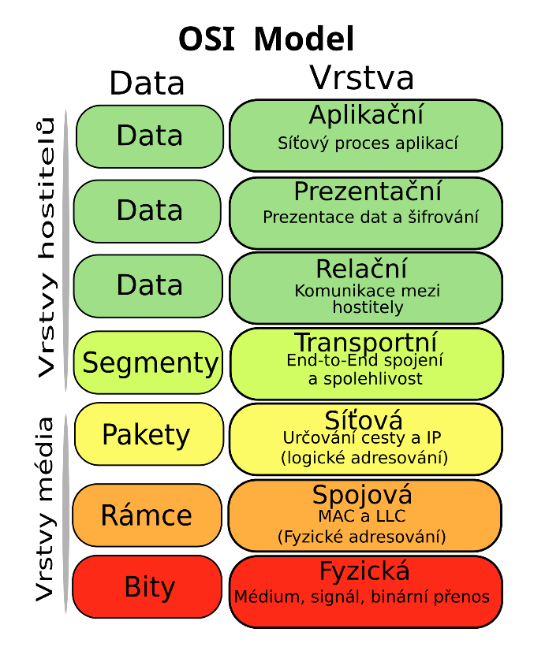

Model ISO/OSI
Ref. model ISO/OSI - sítě
Referenční model ISO OSI (International Organization for Standardization) je určitý soubor pravidel a norem které určují jak by různé části počítačových sítí měly spolupracovat, cílem je poskytnout nějaký základ na kterém se dají stavět složitější normy pro propojení PC systemu, a také aby např. zařízení od různých výrobců spolu mohly pracovat.
Model se dělí do sedmi vrstev, od nejnižší (až hardwarove) po nejvyšší a nejvíce abstraktní uroven
Sedm vrstev:
- Vrstva Fyzická (Physical Layer)
- Linková vrstva (Data Link layer)
- Síťová vrstva (Network layer)
- Transportní vrstva (Transfport layer)
- Relační Vrstva (Session Layer)
- Prezentační Vrstva (Presentation layer))
- Aplikační vrstva (Application layer)

Fyzická vrstva
- Zabívá se převážně fyzikalnimi vlastnostmi přenosu dat, kabely konektory, signály
- Jak jsou samotné 0/1 přenášeny
- Neřeší a nezajištuje kontrolu dat/chyb.
Linková vrstva
- Stará se o přenos "framů" mezi zařízeními v síti, adresováni zařízení, a detekci chyb v přenosu dat. (např CRC)
- dělí se na podvrstvy
- MAC (Media Access Control): adresování zařízení (sítovych rozhrani) a přístup k medium.
- LLC (Logical Link Control): stará se o spolehliví přenos dat a jak se různé protokoly chovají na siti.
- Např. jednoduchý switch dělá v linkové vrstvě.
Síťová vrstva
- Převážně se stará o logické adresování sítě (IP adresy), směrování paketu mezi sitěmi, routing (směrování)
- Různé protokoly, např: IPV4, IPv4, ICMP
- Router např pracuje na síťové vrstvě.
Transportní vrstva
- Stará se o přenos dat mezi uzly sítě s námi požadovanou kvalitou/spolehlivostí, záleží na protokolu
- Protokoly např:
- TCP (Transfer Control Protocol): spojovaný, ověřuje přichod dat a je spolehlivý, kontroluje pořadí paketu a případné kopie
- UDP (User Datagram Protocol): Rychlý, nespojovaný, ale bez záruky doručení dat.
Relační Vrstva
- Řídí relace (propojení) mezi aplikacemi, jejich navázání, správu, ukončení a synchronizaci
- Kdo komunikuje a jak dlouho.
- Synchronizační body při větším množství dat.
Prezentační vrstva:
- Mnění přijatá a odeslaná data tak aby obě strany jim rozuměly, například se stará o
- šifrování (SSL/TLS)
- kompresy
- kodování/formátování (ASCII/UTF8)
Aplikační vrstva
- Nejvíc abstraktní vrstva a nejblíž uživateli, ruzne sitově služby jako např prohližeč nebo email client
- Různé protokoly
- HTTP
- HTTPS
- FTP
- SMTP
- DNS
- Telnet
- atd...
- všechny ruzne služby sitove na vyšší urovni sem zapadají, ne jen např webove stranky
Různé klíčové pojmy:
- Zapouzdření (Encapsulation) - jak data přecházení z vyšší vrstvy do nižší, každá vrstva přidá vlastní západí/zahlaví, na straně přijemce se děje opačný proces
- ** Modularita vrstev** - Vrstva z vyšších vrstvách používá služby z vrstvy pod ní a poskytuje služby vrstvě nad ní
- **Ref. vs skutečné modely" - model ISO/OSI je sice pěkný ale v praxi se někdy třeba používá TCP/IP model s méně vrstvami.